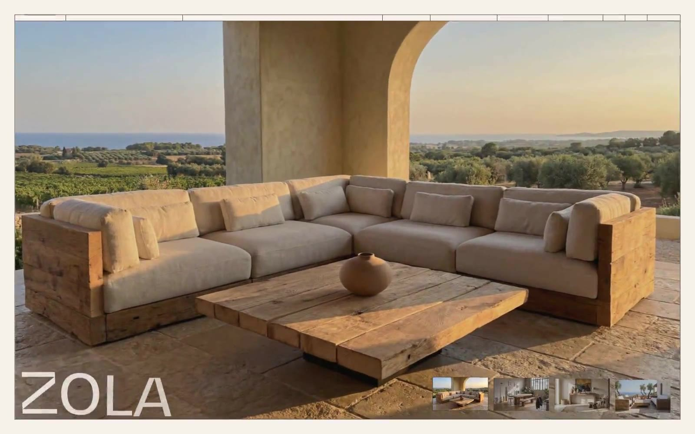

Oakâme 的 Design.md 主题展示，围绕浅色界面、电商零售、AI、消费品牌组织页面。
Explore Oakâme's light E-commerce design system: Earth Parchment #f6f1eb, Deep Charcoal #403a34 colors, BwGradual typography, and DESIGN.md for AI agents.

#f6f1eb: #f6f1eb#403a34: #403a34#333333: #333333#00aa00: #00aa00#555555: #555555#e9e6ed: #e9e6ed#ffffff: #ffffff#321929: #321929#e0dddf: #e0dddf#000000: #000000#808080: #808080#1d1d1f: #1d1d1fdisplay: Interbody: Intermono: ui-monospacehints: Inter,ui-monospace